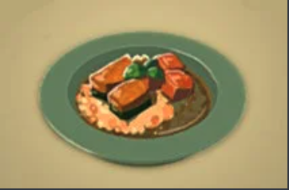

Vegetable Risotto Recipe

How To Make Vegetable Risotto
The sweetness of the ingredients gives this risotto a mild flavor.
Ingredients
- Any Carrot or Any Pumpkin
- Hylian Rice
- Goat Butter
- Rock Salt
Steps
- First press the + button to enter your menu.
- From there, scroll over to the ingredients tab
- Click on a Carrot and select "Hold."
- Click on a Hylian Rice.
- Click on a Goat Butter.
- Click on a Rock Salt.
- Once you have all the ingredients you want to cook, exit the menu and walk over to the open pot. When you get close enough, there will be a prompt telling you to Cook your ingredients.
- Toss your ingredients into the pot and after a few seconds a cooked meal will be done.
Home